import matplotlib.pyplot as plt
import jax
from jax import random
import jax.numpy as jnp
import numpyro
import numpyro.distributions as dist
from numpyro.infer import MCMC, NUTS, Predictive
import arviz as az
rng_key = random.PRNGKey(42)Exercise 7: Robust linear regression
In this exercise we put the Bayesian workflow from 5 Bayesian Data Analysis into practice: we specify a model, check its priors, run MCMC inference with NumPyro, diagnose convergence, and explore the posterior. The twist is that our data contain outliers — observations that deviate wildly from the overall trend. A standard linear regression with Gaussian errors is severely distorted by such points. By switching to a Student-t likelihood, whose heavier tails treat extreme values as rare but plausible, we obtain a model that is robust to outliers and recovers the true trend.
Setup
NotePrerequisites: Python libraries
This exercise uses the following libraries:
- JAX — numerical computing backend.
- NumPyro — probabilistic programming and MCMC inference.
- ArviZ — diagnostics and visualization.
- matplotlib — plotting.
Install via:
pip install jax numpyro arviz matplotlibJAX provides a NumPy-like API with support for automatic differentiation and GPU/TPU acceleration. Two things to keep in mind: JAX arrays are immutable (you cannot modify them in place), and randomness requires explicitly passing a PRNG key to every stochastic function (see the box below). NumPyro is built on top of JAX and provides a high-level interface for defining probabilistic models and running MCMC inference. ArviZ is a library for analysing and visualising Bayesian inference results, compatible with many backends including NumPyro.
NoteBackground: JAX random number generation
JAX uses an explicit PRNG key system instead of a global random state. Every function that involves randomness (random.normal, random.choice, etc.) requires a key as its first argument. The critical rule is: never reuse a key for two different random calls, because JAX will produce the same random numbers each time the same key is used.
To obtain fresh keys, use random.split:
rng_key, subkey = random.split(rng_key) # split into two fresh keys
y = random.normal(subkey, shape=(10,)) # use subkey for this callrandom.split(key) consumes the input key and returns two new, independent keys. We keep one (rng_key) as the running state and spend the other (subkey) on the random operation. This pattern is threaded through the entire exercise: each random call splits off a fresh key from rng_key.
For more details, see the JAX random numbers tutorial.
The data
We work with a synthetic dataset so that we know the true parameters and can check whether the model recovers them. The data are generated from the line \(y = 1 + 2x\) with Gaussian noise (\(\sigma = 2\)). Three severe outliers are then added by hand to test whether the model can learn the true trend despite their presence.
# True parameters
alpha_true = 1.0
beta_true = 2.0
sigma_true = 2.0
# Clean data: 40 points from the true line plus Gaussian noise
rng_key, key_data = random.split(rng_key)
N_clean = 40
x_clean = jnp.linspace(0, 10, N_clean)
y_clean = (
alpha_true
+ beta_true * x_clean
+ sigma_true * random.normal(key_data, shape=(N_clean,))
)
# Three severe outliers
x_outliers = jnp.array([2.0, 5.0, 9.0])
y_outliers = jnp.array([20.0, -10.0, -8.0])
# Combined dataset
x_obs = jnp.concatenate([x_clean, x_outliers])
y_obs = jnp.concatenate([y_clean, y_outliers])
N = len(x_obs)Task 0 — Plot the data. Make a scatter plot of x_obs vs y_obs. Can you identify the three outliers?
TipSolution
Code
fig, ax = plt.subplots(figsize=(7, 3))
ax.scatter(x_clean, y_clean, s=20, color="black", alpha=0.6, zorder=2, label="Clean data")
ax.scatter(x_outliers, y_outliers, s=40, color="red", marker="x", zorder=3, label="Outliers")
ax.set_xlabel("$x$")
ax.set_ylabel("$y$")
ax.legend()
plt.tight_layout()
plt.show()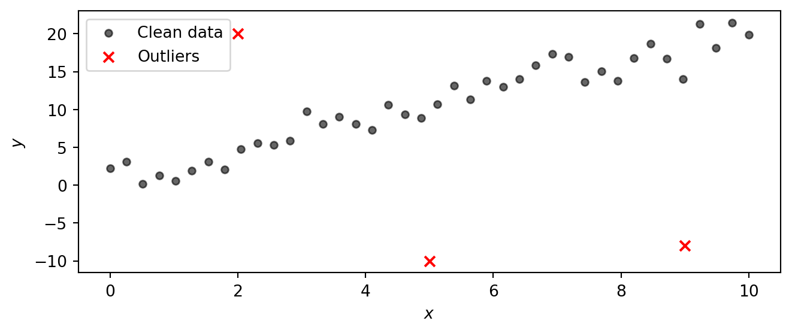
Part 1: Model specification and NumPyro implementation
Instead of a Gaussian likelihood, we use a Student-t likelihood. The Student-t distribution has heavier tails than the Gaussian, so observations that fall far from the mean are less surprising and exert less influence on the parameter estimates. The tail heaviness is controlled by the degrees-of-freedom parameter \(\nu\): small \(\nu\) gives very heavy tails, while \(\nu \to \infty\) recovers the Gaussian. By letting the model learn \(\nu\) from the data, we let it decide how heavy the tails need to be.
NoteBackground: The Student-t distribution
The Student-t distribution \(\text{StudentT}(\nu, \mu, \sigma)\) is a three-parameter family controlled by:
- Degrees of freedom \(\nu > 0\) — governs the tail heaviness.
- Location \(\mu\) — the centre (analogous to the mean of a Gaussian).
- Scale \(\sigma > 0\) — controls the spread (analogous to the standard deviation of a Gaussian).
The key parameter is \(\nu\). Its effect on the shape is:
| \(\nu\) | Behaviour |
|---|---|
| \(\nu = 1\) | Cauchy distribution — extremely heavy tails, no finite mean. |
| \(\nu \approx 2\text{–}5\) | Heavy tails; mean exists (for \(\nu > 1\)) but variance is large or infinite (for \(\nu \le 2\)). |
| \(\nu \approx 10\text{–}30\) | Mildly heavy tails, close to Gaussian but still more robust to outliers. |
| \(\nu \to \infty\) | Recovers the Gaussian \(\text{Normal}(\mu, \sigma)\) exactly. |
The plot below compares the standard Student-t PDF (with \(\mu = 0\), \(\sigma = 1\)) for several values of \(\nu\) against the standard Gaussian. Notice how at \(\nu = 1\) (the Cauchy) the tails are much higher than the Gaussian, meaning extreme values are far more probable. As \(\nu\) increases the Student-t progressively approaches the Gaussian. In a regression setting, heavy tails let the model “explain away” outliers without distorting the estimate of the trend.
Code
t_grid = jnp.linspace(-5, 5, 400)
fig, ax = plt.subplots(figsize=(7, 3))
for nu_val, color in [(1, "C0"), (3, "C1"), (10, "C2"), (30, "C3")]:
pdf = jnp.exp(dist.StudentT(nu_val, 0, 1).log_prob(t_grid))
ax.plot(t_grid, pdf, color=color, label=rf"$\nu = {nu_val}$")
gaussian_pdf = jnp.exp(dist.Normal(0, 1).log_prob(t_grid))
ax.plot(t_grid, gaussian_pdf, color="black", linestyle="--", label=r"Gaussian ($\nu \to \infty$)")
ax.set_xlabel("$t$")
ax.set_ylabel("Density")
ax.legend()
plt.tight_layout()
plt.show()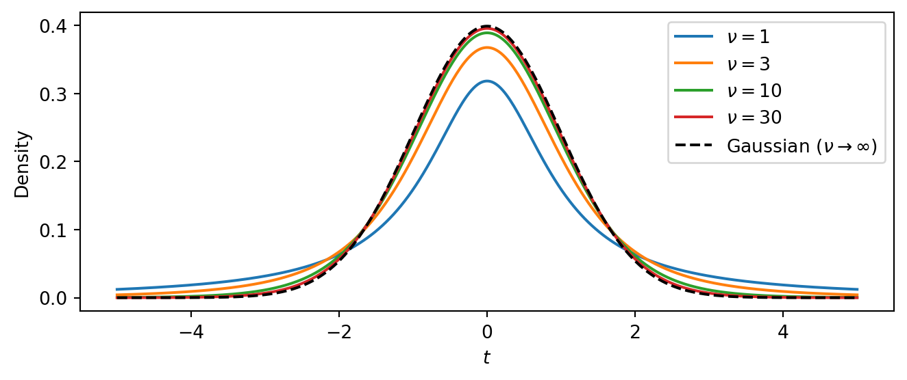
The intercept \(\alpha\) and slope \(\beta\) can be any real number, so we give them vague Normal priors centred at zero. The scale \(\sigma\) and degrees of freedom \(\nu\) must be positive, so we use Exponential priors:
\[ \begin{aligned} \alpha &\sim \text{Normal}(0,\, 10) \\ \beta &\sim \text{Normal}(0,\, 10) \\ \sigma &\sim \text{Exponential}(1/5) \\ \nu &\sim \text{Exponential}(0.1) \\ \mu_i &= \alpha + \beta \, x_i \\ y_i &\sim \text{StudentT}(\nu,\, \mu_i,\, \sigma), \quad i = 1, \ldots, N \end{aligned} \]
The linear mean \(\mu_i = \alpha + \beta\, x_i\) is a deterministic function of the parameters and the input \(x_i\). The likelihood then says that every observed \(y_i\) is drawn from a Student-t centred on \(\mu_i\).
Task 1 — Implement the model. Write a NumPyro model function def model(x, y=None) that implements the specification above.
In NumPyro, random variables are declared with numpyro.sample("name", dist.Distribution(...)). You can save deterministic quantities to the inference output with numpyro.deterministic("name", value). To make the likelihood observe data when available, pass the keyword argument obs=y. The NumPyro distributions reference lists all available distributions.
NoteHint: Math-to-code translation
| Math | NumPyro |
|---|---|
| \(\alpha \sim \text{Normal}(0, 10)\) | alpha = numpyro.sample("alpha", dist.Normal(0, 10)) |
| \(\beta \sim \text{Normal}(0, 10)\) | beta = numpyro.sample("beta", dist.Normal(0, 10)) |
| \(\sigma \sim \text{Exponential}(1/5)\) | sigma = numpyro.sample("sigma", dist.Exponential(0.2)) |
| \(\nu \sim \text{Exponential}(0.1)\) | nu = numpyro.sample("nu", dist.Exponential(0.1)) |
| \(\mu_i = \alpha + \beta\, x_i\) | mu = numpyro.deterministic("mu", alpha + beta * x) |
| \(y_i \sim \text{StudentT}(\nu, \mu_i, \sigma)\) | numpyro.sample("obs", dist.StudentT(nu, mu, sigma), obs=y) |
TipSolution
def model(x, y=None):
# Priors
alpha = numpyro.sample("alpha", dist.Normal(0, 10))
beta = numpyro.sample("beta", dist.Normal(0, 10))
sigma = numpyro.sample("sigma", dist.Exponential(0.2))
nu = numpyro.sample("nu", dist.Exponential(0.1))
# Linear mean
mu = numpyro.deterministic("mu", alpha + beta * x)
# Likelihood
numpyro.sample("obs", dist.StudentT(nu, mu, sigma), obs=y)Note that we have computed the linear mean mu as a deterministic node in the model. This allows us to easily extract posterior samples of mu later for visualization. The model would work just fine if we directly used mu = alpha + beta * x instead, but such intermediate computations are not automatically saved. Alternatively, we could have written
mu = alpha + beta * x
numpyro.deterministic("mu", mu)Part 2: Prior predictive checks
Before running inference we should check that the priors are reasonable. We do this at two levels: first by inspecting each prior distribution on its own, then by pushing the priors through the model to see what kinds of data they imply.
Task 2a — Plot the prior distributions. Plot the probability density function (PDF) of each prior. NumPyro distribution objects provide a .log_prob method that returns the log-density at any point. What range of values does each prior consider plausible?
TipSolution
Code
priors = [
(r"$\alpha$", dist.Normal(0, 10), jnp.linspace(-30, 30, 300)),
(r"$\beta$", dist.Normal(0, 10), jnp.linspace(-30, 30, 300)),
(r"$\sigma$", dist.Exponential(0.2), jnp.linspace(0.01, 15, 300)),
(r"$\nu$", dist.Exponential(0.1), jnp.linspace(0.01, 40, 300)),
]
fig, axes = plt.subplots(2, 2, figsize=(6, 3))
for ax, (name, prior, grid) in zip(axes.flat, priors):
ax.plot(grid, jnp.exp(prior.log_prob(grid)), color="C0")
ax.set_xlabel(name)
ax.set_ylabel("Density")
plt.tight_layout()
plt.show()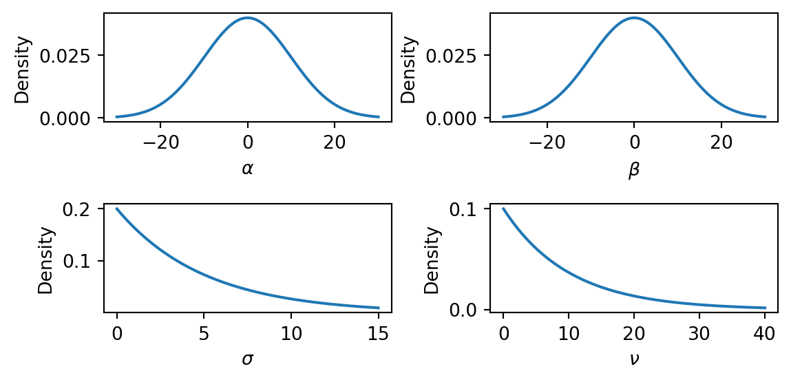
The \(\text{Normal}(0, 10)\) priors on \(\alpha\) and \(\beta\) are broad and symmetric, placing most mass in the range \((-20, 20)\). This is vague enough to let the data determine the sign and magnitude of the intercept and slope. The \(\text{Exponential}(0.2)\) prior on \(\sigma\) has mean \(5\) and a long right tail, so it is quite vague about the noise level. The \(\text{Exponential}(0.1)\) prior on \(\nu\) has mean \(10\), allowing both heavy-tailed (small \(\nu\)) and near-Gaussian (large \(\nu\)) error models.
Task 2b — Prior predictive check. Use Predictive(model, num_samples=500) with y=None to draw 500 prior predictive samples. Then produce a plot with two layers:
- Regression lines: plot 100 of the sampled regression lines \(\mu = \alpha + \beta x\) as a “spaghetti plot.”
- 90% prediction band: for the simulated observations
"obs", compute the 5th and 95th percentiles across samples at each \(x\) value (usingjnp.percentile) and shade the region withax.fill_between.
Do the prior predictions cover a reasonable range?
NumPyro’s Predictive draws parameter values from the priors and runs the model forward. Calling Predictive(model, num_samples=500) returns a callable; you then invoke it with a PRNG key and the same arguments as the model function (here x and y). Because we pass y=None, the model generates synthetic observations rather than conditioning on data. The returned dictionary contains samples for every numpyro.sample and numpyro.deterministic site in the model, in particular the regression lines "mu" and the simulated observations "obs".
TipSolution
x_grid = jnp.linspace(float(x_obs.min()), float(x_obs.max()), 200)
rng_key, subkey = random.split(rng_key)
prior_pred = Predictive(model, num_samples=500)(subkey, x=x_grid, y=None)Code
# 90% prediction band from simulated observations
obs_lo = jnp.percentile(prior_pred["obs"], 5, axis=0)
obs_hi = jnp.percentile(prior_pred["obs"], 95, axis=0)
fig, ax = plt.subplots(figsize=(7, 4))
ax.fill_between(x_grid, obs_lo, obs_hi, color="grey", alpha=0.15, label="90% prediction band")
for i in range(100):
ax.plot(x_grid, prior_pred["mu"][i], color="C1", alpha=0.2, linewidth=0.8)
ax.scatter(x_obs, y_obs, s=20, color="black", alpha=0.6, zorder=2, label="Observed")
ax.set_xlabel("$x$")
ax.set_ylabel("$y$")
ax.set_ylim(-50, 80)
ax.legend()
plt.tight_layout()
plt.show()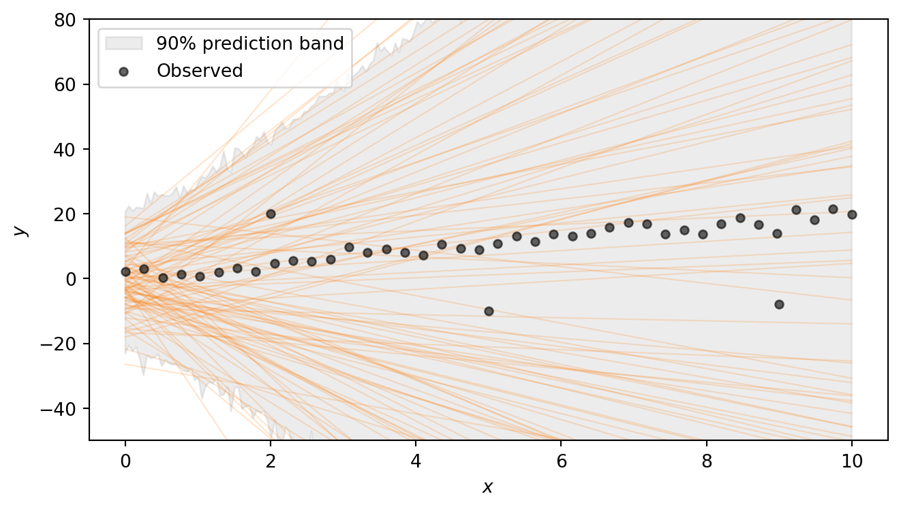
The regression lines span a wide range of slopes and intercepts, and the shaded 90% prediction band — which additionally accounts for the noise \(\sigma\) and the heavy-tailed Student-t likelihood — is very broad. This confirms that the priors are vague enough to let the data drive the inference. Note that we are excluding extremely steep lines, as well as lines that have intercept outside (-20,20). Such choices have to be adapted to the problem at hand.
Part 3: Running inference
With a model in hand and priors that pass basic sanity checks, we can condition on the observed data using MCMC. NumPyro provides NUTS (the No-U-Turn Sampler), a gradient-based sampler that automatically tunes its step size and trajectory length. NUTS is the default choice for models with continuous parameters and typically requires little manual tuning.
Task 3 — Run MCMC. Set up the NUTS sampler and run 4 chains with 1000 warmup and 2000 posterior draws each. Convert the result to an ArviZ DataTree using az.from_numpyro(mcmc).
Running inference in NumPyro takes three steps:
- Create a sampler kernel.
NUTS(model)wraps the model function in a NUTS kernel that knows how to propose new parameter values using gradient information from JAX’s autodiff. - Set up the MCMC runner.
MCMC(kernel, ...)configures the sampling run. The key arguments are:num_warmup— the number of initial samples used to tune the sampler (these are discarded).num_samples— the number of posterior draws to keep per chain.num_chains— the number of independent chains to run (multiple chains let us check convergence).
- Run the sampler.
mcmc.run(subkey, ...)executes the sampling. You pass a PRNG key and the same arguments as the model function — herex=x_obsandy=y_obs. Passing the observedycauses the likelihood to condition on the data rather than generating synthetic observations.
After sampling, we convert the output to an xarray DataTree with az.from_numpyro(mcmc). This is the standard data structure used by ArviZ to store posterior samples, diagnostics, and metadata. All ArviZ diagnostic and plotting functions accept a DataTree as input.
TipSolution
The following code sets up the sampler and runs MCMC. This can take a few seconds. You should see progress bars for each chain as the sampler runs.
kernel = NUTS(model)
mcmc = MCMC(kernel, num_warmup=1000, num_samples=2000, num_chains=4)
rng_key, subkey = random.split(rng_key)
mcmc.run(subkey, x=x_obs, y=y_obs)Finally, we convert the MCMC output to an ArviZ DataTree for analysis:
dt = az.from_numpyro(mcmc)Part 4: Convergence diagnostics
MCMC produces approximate posterior samples. Before interpreting the results we must check that the sampler has converged. We want to ensure that the chains have explored the posterior thoroughly and agree with each other. We use two complementary checks: numerical summaries and visual diagnostics.
Task 4a — Summary table. Call az.summary on the DataTree and inspect \(\hat{R}\) and ESS for each parameter. Are the values healthy?
Pass var_names=["alpha", "beta", "sigma", "nu"] to restrict the table to the model parameters. The returned table includes:
- \(\hat{R}\) (R-hat) — measures agreement across chains. Values close to \(1.00\) (below \(1.01\)) indicate that the chains have converged to the same distribution; values above \(1.01\) are a warning sign.
- ESS bulk / ESS tail — the effective sample size in the bulk and tails of the distribution. These estimate how many independent draws the correlated MCMC output is worth. Values in the hundreds or thousands are healthy; very low ESS means the sampler is not exploring efficiently.
TipSolution
az.summary(dt, var_names=["alpha", "beta", "sigma", "nu"])| mean | sd | eti89_lb | eti89_ub | ess_bulk | ess_tail | r_hat | mcse_mean | mcse_sd | |
|---|---|---|---|---|---|---|---|---|---|
| alpha | 0.4 | 0.6 | -0.54 | 1.4 | 3571 | 3851 | 1.00 | 0.01 | 0.0073 |
| beta | 2.028 | 0.116 | 1.8 | 2.2 | 3710 | 4125 | 1.00 | 0.0019 | 0.0013 |
| sigma | 1.445 | 0.294 | 1 | 1.9 | 5163 | 4904 | 1.00 | 0.0041 | 0.0033 |
| nu | 1.67 | 0.51 | 1 | 2.6 | 5030 | 5038 | 1.00 | 0.0072 | 0.0071 |
All \(\hat{R}\) values should be \(\approx 1.00\) and the ESS values should be in the thousands, indicating good convergence and efficient sampling. The posterior 89% credible intervals (eti89_lb, eti89_ub) should be reasonably close to the true parameter values (1.0 for \(\alpha\), 2.0 for \(\beta\), 2.0 for \(\sigma\), and a small value for \(\nu\) indicating heavy tails).
Task 4b — Rank plots. Use az.plot_rank to make rank plots for the four parameters. Do the chains look well-mixed?
Rank plots work as follows: all posterior samples across chains are pooled and replaced by their fractional ranks (values in \([0, 1]\)). For each chain, the \(\Delta\)-ECDF is plotted — the difference between the observed empirical CDF of ranks and the expected uniform CDF. If the chains are well-mixed, every chain’s curve should stay close to zero and within the confidence band (shaded region). A curve that strays outside the band indicates that the corresponding chain is over- or under-representing certain rank regions, a sign of poor mixing.
TipSolution
Code
az.plot_rank(dt, var_names=["alpha", "beta", "sigma", "nu"], figure_kwargs={"figsize": (7, 2)})
plt.show()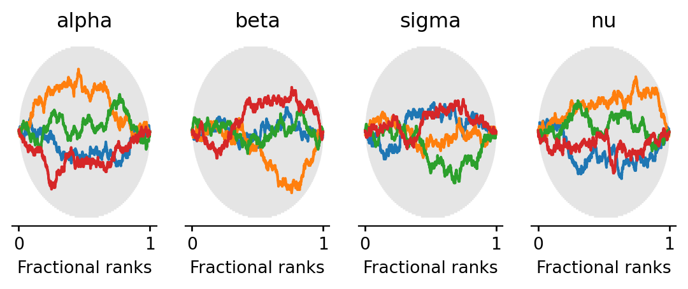
All chains’ \(\Delta\)-ECDF curves should stay within the confidence band, confirming good mixing.
Part 5: Exploring the posterior
With diagnostics looking healthy, we can now examine what the posterior tells us about the model parameters. We look at the joint distribution of the parameters via pair plots and then visualize the fitted regression lines on the data.
Task 5a — Pair plot. Use az.plot_pair to plot the joint posterior of \(\alpha\), \(\beta\), \(\sigma\), \(\nu\). Pass marginal=True to add marginal density plots along the diagonal, and var_names=["alpha", "beta", "sigma", "nu"] to select the four parameters. Are any parameters correlated? What does the posterior on \(\nu\) tell you?
TipSolution
Code
az.plot_pair(
dt,
var_names=["alpha", "beta", "sigma", "nu"],
marginal=True,
figure_kwargs={"figsize": (8, 7)},
)
plt.show()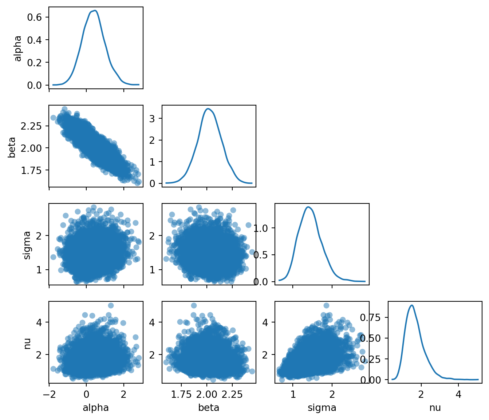
The pair plot reveals several things:
- \(\alpha\) and \(\beta\) are negatively correlated: a higher intercept compensates for a lower slope, and vice versa. This is typical in linear regression and reflects the fact that many different \((\alpha, \beta)\) combinations produce lines that pass through the bulk of the data.
- The marginal for \(\nu\) is concentrated at small values (roughly \(2\)–\(10\)), meaning the model has learned that heavy tails are needed to explain the outliers. If the data had no outliers, \(\nu\) would be pushed to larger values, approaching the Gaussian limit.
- The posteriors for \(\nu\) and \(\sigma\) are positively correlated: smaller \(\nu\) (heavier tails) allows for a smaller \(\sigma\) (less noise), while larger \(\nu\) (lighter tails) requires a larger \(\sigma\) to accommodate the outliers.
Task 5b — Posterior regression lines. Extract posterior samples of \(\alpha\) and \(\beta\) from the DataTree and plot 200 regression lines \(\hat{y} = \alpha^{(s)} + \beta^{(s)} x\) on the scatter plot. Overlay the posterior mean line and the true line.
The DataTree returned by az.from_numpyro organises samples into groups. The posterior group is accessed with dt["posterior"], which returns a child DataTree. Individual variables like dt["posterior"]["alpha"] are xarray DataArray objects with dimensions (chain, draw). To get a flat array of all samples across chains, use .values.flatten().
TipSolution
posterior = dt["posterior"]
alpha_samples = posterior["alpha"].values.flatten()
beta_samples = posterior["beta"].values.flatten()
x_plot = jnp.linspace(float(x_obs.min()), float(x_obs.max()), 200)
alpha_mean = alpha_samples.mean()
beta_mean = beta_samples.mean()Code
fig, ax = plt.subplots(figsize=(7, 4))
# Plot 200 posterior lines
rng_key, subkey = random.split(rng_key)
idx = random.choice(subkey, len(alpha_samples), shape=(200,), replace=False)
for i in idx:
ax.plot(
x_plot, alpha_samples[i] + beta_samples[i] * x_plot,
color="C0", alpha=0.05, linewidth=0.8,
)
# Posterior mean line
ax.plot(
x_plot, alpha_mean + beta_mean * x_plot,
color="C0", linewidth=2, label=f"Posterior mean: $y = {alpha_mean:.2f} + {beta_mean:.2f}x$",
)
# True line
ax.plot(
x_plot, alpha_true + beta_true * x_plot,
color="red", linewidth=1.5, linestyle="--",
label=f"True: $y = {alpha_true} + {beta_true}x$",
)
ax.scatter(x_obs, y_obs, s=20, color="black", alpha=0.6, zorder=2)
ax.set_xlabel("$x$")
ax.set_ylabel("$y$")
ax.legend(loc="upper left")
plt.tight_layout()
plt.show()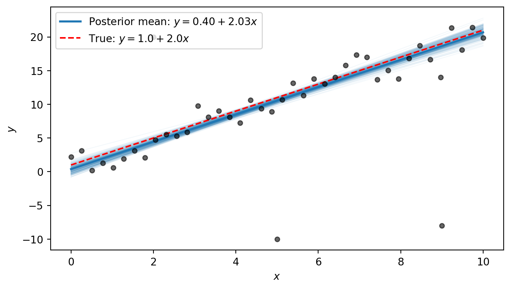
The posterior lines cluster near the true line \(y = 1 + 2x\). We notice that the intercept is estimated to be slightly higher than the true value, with a slope that is slightly smaller than the true value. This is because the three outliers exert some pull on the line. However, the heavy tails allow the model to “explain away” the outliers as rare but plausible events, so that the shape of the line is only minimally distorted by them. In Part 6 we will compare this to what ordinary least squares produces.
Part 6 (Bonus): Comparison with OLS
Ordinary least squares (OLS) is the standard non-Bayesian approach to linear regression. It finds the line that minimises the sum of squared residuals. This is equivalent to maximum-likelihood estimation under Gaussian errors. Because each residual is squared, outliers that are far from the line contribute disproportionately to the total loss, pulling the fitted line toward them.
Task 6 — OLS comparison. Compute the OLS fit and overlay the OLS line on the posterior lines plot from Task 5b. How does OLS handle the outliers compared to the Bayesian robust model?
The simplest approach is to use jnp.linalg.lstsq, which solves the least-squares problem \(\min_\theta \lVert X\theta - y \rVert^2\) given a design matrix \(X\) and a response vector \(y\). For a line \(y = \alpha + \beta x\), we collect the two unknowns into a vector \(\theta = (\alpha, \beta)^T\) and build the \(N \times 2\) design matrix \[
X = \begin{pmatrix} 1 & x_1 \\ 1 & x_2 \\ \vdots & \vdots \\ 1 & x_N \end{pmatrix},
\] so that \(X\theta = (\alpha + \beta x_1,\; \alpha + \beta x_2,\; \ldots,\; \alpha + \beta x_N)^T\). The first column of ones accounts for the intercept \(\alpha\); the second column holds the \(x\) values and multiplies the slope \(\beta\).
NoteBackground: OLS closed-form formula
The OLS estimator minimises the sum of squared residuals: \[ (\hat{\alpha}, \hat{\beta}) = \arg\min_{\alpha, \beta} \sum_{i=1}^{N} (y_i - \alpha - \beta\, x_i)^2. \] Setting the partial derivatives to zero and solving yields the closed-form solution: \[ \hat{\beta} = \frac{\sum_{i=1}^N (x_i - \bar{x})(y_i - \bar{y})}{\sum_{i=1}^N (x_i - \bar{x})^2}, \qquad \hat{\alpha} = \bar{y} - \hat{\beta}\,\bar{x}, \] where \(\bar{x} = \frac{1}{N}\sum_i x_i\) and \(\bar{y} = \frac{1}{N}\sum_i y_i\). This is also the maximum-likelihood estimator under Gaussian errors.
The same result can be written compactly in matrix form. Collecting the residuals into a vector, the objective becomes \(\lVert y - X\theta \rVert^2\) where \(\theta = (\alpha, \beta)^T\) and \(X\) is the design matrix defined above. Expanding and differentiating with respect to \(\theta\) gives the normal equations \(X^T X\, \hat\theta = X^T y\), whose solution is \[
\hat\theta = (X^T X)^{-1} X^T y.
\] This requires \(X^T X\) to be invertible, which holds whenever \(X\) has at least as many linearly independent rows as columns. For our case, this means at least two distinct \(x\) values. This is exactly the system that jnp.linalg.lstsq solves.
TipSolution
# Design matrix: column of ones (intercept) and x values
X = jnp.column_stack([jnp.ones_like(x_obs), x_obs])
# Solve least-squares: X @ theta ≈ y
theta_ols, _, _, _ = jnp.linalg.lstsq(X, y_obs)
alpha_ols, beta_ols = theta_ols
print(f"OLS: alpha = {alpha_ols:.2f}, beta = {beta_ols:.2f}")OLS: alpha = 1.94, beta = 1.58Code
fig, ax = plt.subplots(figsize=(7, 4))
# Posterior lines
rng_key, subkey = random.split(rng_key)
idx = random.choice(subkey, len(alpha_samples), shape=(200,), replace=False)
for i in idx:
ax.plot(
x_plot, alpha_samples[i] + beta_samples[i] * x_plot,
color="C0", alpha=0.05, linewidth=0.8,
)
# Posterior mean
ax.plot(
x_plot, alpha_mean + beta_mean * x_plot,
color="C0", linewidth=2,
label=f"Posterior mean: $y = {alpha_mean:.2f} + {beta_mean:.2f}x$",
)
# OLS
ax.plot(
x_plot, float(alpha_ols) + float(beta_ols) * x_plot,
color="darkorange", linewidth=2, linestyle="-.",
label=f"OLS: $y = {alpha_ols:.2f} + {beta_ols:.2f}x$",
)
# True line
ax.plot(
x_plot, alpha_true + beta_true * x_plot,
color="red", linewidth=1.5, linestyle="--",
label=f"True: $y = {alpha_true} + {beta_true}x$",
)
ax.scatter(x_obs, y_obs, s=20, color="black", alpha=0.6, zorder=2)
ax.set_xlabel("$x$")
ax.set_ylabel("$y$")
ax.legend(loc="upper left")
plt.tight_layout()
plt.show()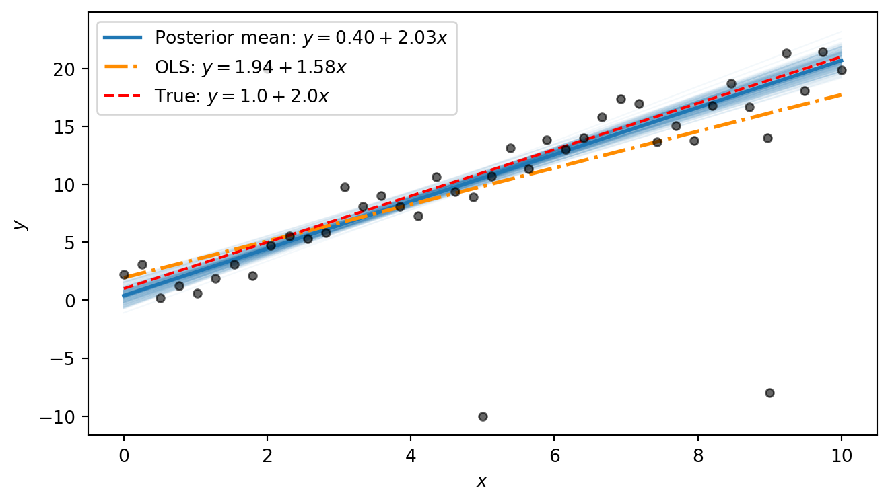
The OLS line is visibly pulled away from the true line by the outliers: its slope is distorted because the squared-error loss heavily penalises the large residuals at the outlier points. The Bayesian posterior mean, by contrast, stays close to the true line. The difference comes down to the error model: OLS implicitly assumes Gaussian errors, so every point — no matter how extreme — exerts strong influence. The Student-t likelihood used in our Bayesian model has heavy tails, so the outliers fall comfortably in the tails and barely affect the estimated trend.
Part 7 (Bonus): Beyond straight lines: fitting a damped oscillator
The Bayesian workflow we used above is not limited to straight lines. It applies to any function for which we can write down a generative model. To illustrate this, we fit a damped oscillator.
A mass on a spring subject to friction obeys the damped harmonic oscillator equation. The displacement as a function of time is \[ y(t) = A\, e^{-\gamma t} \cos(\omega t + \phi), \] where:
- \(A > 0\) is the amplitude — the initial displacement.
- \(\gamma > 0\) is the decay rate — how quickly friction damps the motion.
- \(\omega > 0\) is the angular frequency — how fast the system oscillates.
- \(\phi\) is the phase — the initial phase of the oscillation.
The exponential envelope \(A e^{-\gamma t}\) shrinks over time while the cosine oscillates inside it. At \(t = 0\) the displacement is \(A \cos\phi\), and as \(t \to \infty\) it decays to zero.
We first define a Python function that computes the damped-oscillator mean:
def dho_mean(t, A, gamma, omega, phi):
"""Damped harmonic oscillator: A * exp(-gamma * t) * cos(omega * t + phi)."""
return A * jnp.exp(-gamma * t) * jnp.cos(omega * t + phi)We then use it to generate 60 noisy measurements:
# True parameters
A_true = 3.0
gamma_true = 0.3
omega_true = 2.5
phi_true = 0.5
sigma_dho_true = 0.3
# Observations
t_obs = jnp.linspace(0, 8, 60)
y_true = dho_mean(t_obs, A_true, gamma_true, omega_true, phi_true)
rng_key, subkey = random.split(rng_key)
y_dho = y_true + sigma_dho_true * random.normal(subkey, shape=t_obs.shape)Code
t_fine = jnp.linspace(0, 8, 400)
y_true_fine = dho_mean(t_fine, A_true, gamma_true, omega_true, phi_true)
fig, ax = plt.subplots(figsize=(7, 3))
ax.plot(t_fine, y_true_fine, color="red", linestyle="--", linewidth=1.5, label="True curve")
ax.scatter(t_obs, y_dho, s=20, color="black", alpha=0.6, zorder=2, label="Observed")
ax.set_xlabel("$t$")
ax.set_ylabel("$y$")
ax.legend()
plt.tight_layout()
plt.show()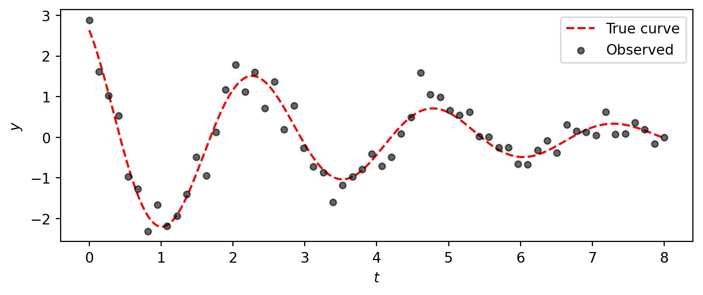
The data clearly show a decaying oscillation, but the noise makes it impossible to read off the exact parameter values by eye.
Task 7 — Fit the damped oscillator. Apply the same Bayesian workflow from Parts 1–5 to fit the damped oscillator model to this data. Specifically:
Model. Write a NumPyro model with priors \[ \begin{aligned} A &\sim \text{HalfNormal}(5), &\quad \gamma &\sim \text{HalfNormal}(1), \\ \omega &\sim \text{HalfNormal}(5), &\quad \phi &\sim \text{Uniform}(-\pi, \pi), \\ \sigma &\sim \text{HalfNormal}(1), & & \end{aligned} \] and a Gaussian likelihood \(y_i \sim \text{Normal}(\mu_i, \sigma)\) where \(\mu_i = A\, e^{-\gamma t_i} \cos(\omega t_i + \phi)\).
Inference. Run NUTS with 4 chains (1000 warmup, 2000 draws).
Diagnostics. Check
az.summaryandaz.plot_rank. Do the chains look healthy? Were the parameters recovered successfully?Posterior predictions. Plot 200 posterior curves overlaid on the data, together with the true curve.
TipSolution
Model:
def dho_model(t, y=None):
A = numpyro.sample("A", dist.HalfNormal(5.0))
gamma = numpyro.sample("gamma", dist.HalfNormal(1.0))
omega = numpyro.sample("omega", dist.HalfNormal(5.0))
phi = numpyro.sample("phi", dist.Uniform(-jnp.pi, jnp.pi))
sigma = numpyro.sample("sigma", dist.HalfNormal(1.0))
mu = numpyro.deterministic("mu", dho_mean(t, A, gamma, omega, phi))
numpyro.sample("obs", dist.Normal(mu, sigma), obs=y)Inference:
kernel_dho = NUTS(dho_model)
mcmc_dho = MCMC(kernel_dho, num_warmup=1000, num_samples=2000, num_chains=4)
rng_key, subkey = random.split(rng_key)
mcmc_dho.run(subkey, t=t_obs, y=y_dho)
dt_dho = az.from_numpyro(mcmc_dho)Diagnostics:
az.summary(dt_dho, var_names=["A", "gamma", "omega", "phi", "sigma"])| mean | sd | eti89_lb | eti89_ub | ess_bulk | ess_tail | r_hat | mcse_mean | mcse_sd | |
|---|---|---|---|---|---|---|---|---|---|
| A | 2.905 | 0.196 | 2.6 | 3.2 | 4434 | 4698 | 1.00 | 0.0029 | 0.0021 |
| gamma | 0.2717 | 0.0282 | 0.23 | 0.32 | 4611 | 4200 | 1.00 | 0.00041 | 0.00031 |
| omega | 2.5035 | 0.0271 | 2.5 | 2.5 | 4574 | 4696 | 1.00 | 0.0004 | 0.00029 |
| phi | 0.491 | 0.062 | 0.39 | 0.59 | 4609 | 4932 | 1.00 | 0.00092 | 0.00068 |
| sigma | 0.3278 | 0.0313 | 0.28 | 0.38 | 6281 | 5605 | 1.00 | 0.0004 | 0.00031 |
We observe that the true parameter values (A=3.0, gamma=0.3, omega=2.5, phi=0.5, sigma=0.3) are all within the 89% credible intervals, indicating successful recovery.
az.plot_rank(
dt_dho, var_names=["A", "gamma", "omega", "phi", "sigma"],
figure_kwargs={"figsize": (7, 2)},
)
plt.show()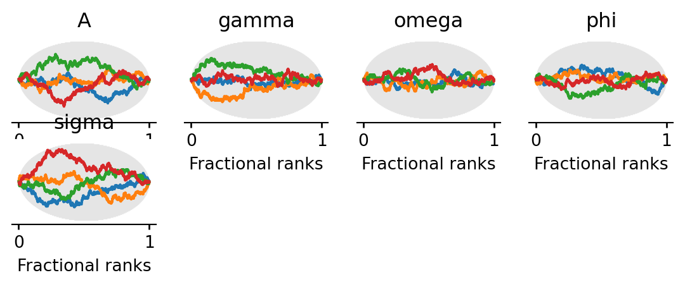
Posterior predictions:
post_dho = dt_dho["posterior"]
A_s = post_dho["A"].values.flatten()
gamma_s = post_dho["gamma"].values.flatten()
omega_s = post_dho["omega"].values.flatten()
phi_s = post_dho["phi"].values.flatten()Code
fig, ax = plt.subplots(figsize=(7, 3.5))
rng_key, subkey = random.split(rng_key)
idx = random.choice(subkey, len(A_s), shape=(200,), replace=False)
for i in idx:
ax.plot(t_fine, dho_mean(t_fine, A_s[i], gamma_s[i], omega_s[i], phi_s[i]),
color="C0", alpha=0.05, linewidth=0.8)
# Posterior mean curve
ax.plot(t_fine, dho_mean(t_fine, A_s.mean(), gamma_s.mean(), omega_s.mean(), phi_s.mean()),
color="C0", linewidth=2, label="Posterior mean")
# True curve
ax.plot(t_fine, y_true_fine, color="red", linestyle="--", linewidth=1.5, label="True curve")
ax.scatter(t_obs, y_dho, s=20, color="black", alpha=0.6, zorder=2)
ax.set_xlabel("$t$")
ax.set_ylabel("$y$")
ax.legend()
plt.tight_layout()
plt.show()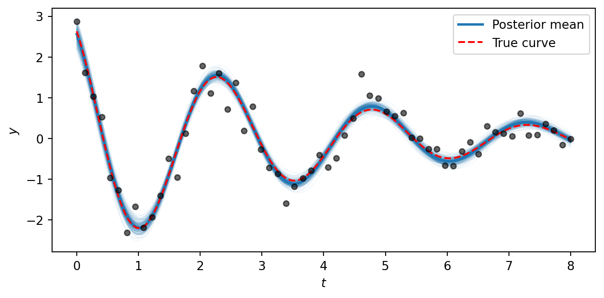
The posterior curves cluster tightly around the true generating function, showing that the model successfully recovers all five parameters from noisy data. The key takeaway is that the NumPyro/NUTS workflow is the same regardless of whether the mean function \(\mu(t)\) is a straight line or a nonlinear physical model — all we change is the formula inside the model function. This same approach scales to arbitrarily complex generative models.